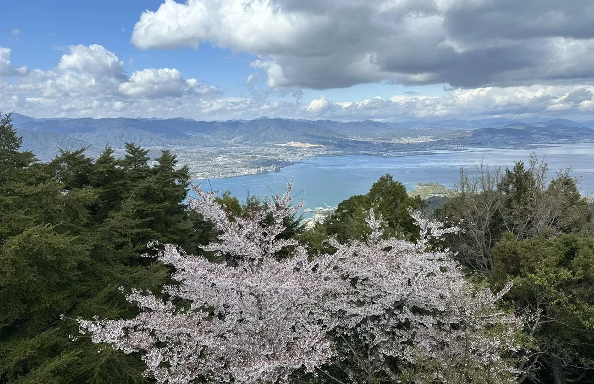

Introdaction

Hiroshima is a city in western Japan with an important history and many interesting places to visit. The city is known around the world for the Hiroshima Peace Memorial Park and the Atomic Bomb Dome.
Hiroshima also has beautiful places such as Miyajima, where visitors can see Itsukushima Shrine and its famous torii gate. In addition to its history and culture, Hiroshima is known for local foods such as Hiroshima-style okonomiyaki and oysters. Visitors can learn about history while also enjoying the city's culture and food.
Popular Attractions
-
Peace Memorial Park

-
Atomic Bomb Dome

-
Miyajima

-
Mt.Mise

Travel Tips
| Travel Information | Details |
|---|---|
| Best Time to Visit | Spring and Fall |
| Recommended Stay | 2–3 days |
| Transportation | Train, Bus, and Streetcar |
| Popular Areas | Peace Memorial Park, Miyajima |
| Local Food | Hiroshima-style Okonomiyaki, Oysters |